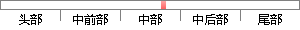

RAID 2：将数据条块化地分布 在 不同的硬盘上，条块 的 单位为位 或者 字节，并使用称为“加重平均纠错码(海明码)”的编码技术来提供错误检查及恢复。这种编码技术需要多个磁盘存放检查及恢复信息，使得RAID 2技术实施更复杂，因此在商业环境中很少使用。 RAID 3： 与 RAID 2非常类似，都是将数据条块化分布 在 不同的硬盘上， 但是 区别在于RAID 3使用简单的奇偶校验， 并使用 单块磁盘存放奇偶校验信息。如果一块磁盘失效，奇偶盘及其他数据盘可以重新产生数据；如果奇偶盘失效则不影响数据使用。RAID 3 对 于 大量的连续数据可提供很好的传输率，但对于随机数据来说，奇偶盘会成为写操作的瓶颈。 RAID 4：RAID 4同样也将数据条块化并分布 在 不同的磁盘上，但条块单位为块或记录。 RAID 4使用一块磁盘作为奇偶校验盘，每次写操作都需要访问奇偶盘，这时奇偶校验盘会成为写操作的瓶颈，因此RAID 4在商业环境中也很少使用。 RAID 5：
片段位置图

相似结果
相似片段：
每一块磁盘作磁盘镜像进行冗余。它的优点是同时拥有RAID 0的超凡速度和RAID 1的数据高可靠性，但是CPU占用率同样也更高，而且磁盘的利用率比较低。 RAID 2:将数据条块化地分布于不同的硬盘上，条块单位为位或字节，并使用称为“加重平均纠错码(海明码)”的编码技术来提供错误检查及恢复。这种编码技术需要多个磁盘存放检查及恢复信息，使得RAID 2技术实施更复杂，因此在商业环境中很少使用。 RAID 3:它同RAID 2非常类似，都是将数据条块化分布于不同的硬盘上，区别在于RAID 3使用简单的奇偶校验，并用单块磁盘存放奇偶校验信息。如果一块磁盘失效，奇偶盘及其他数据盘可以重新产生数据;如果奇偶盘失效则不影响数据使用。RAID 3对于大量的连续数据可提供很好的传输率，但对于随机数据来说，奇偶盘会成为写操作的瓶颈。 RAID 4:RAID 4同样也将数据条块化并分布于不同的磁盘上，但条块单位为块或记录。RAID 4使用一块磁盘作为奇偶校验盘，每次写操作都需要访问奇偶盘，这时奇偶校验盘会成为写操作的瓶颈，因此RAID 4在商业环境中也很少使用。 RAID 5:RAID 5不单独指定的奇偶盘，而是在所有磁盘上交叉地存取数据及奇偶校验信息。在RAID 5上，读/写指针可同时对阵列设备进行操作，提供了更高的数据
| 对比库： | WriteCheck云资源库 |
| 来源： | www.webko.cn 查看来源 |
| 发布时间： | 2013-12-14 |
| 相似率 | 84.46% （严重抄袭） |